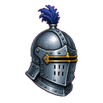
Planche complète
Les 30 pictos, 128 px, collés sur du parchemin.
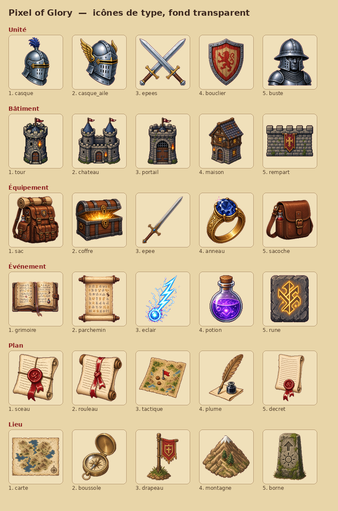
Unité
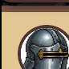
Actuel : casque de front dans un cercle sombre.
01 · CasqueMême idée, plus de volume, panache bleu.
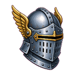
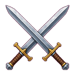
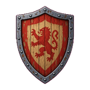
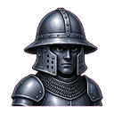
Bâtiment
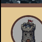
Actuel : petite tour grise au drapeau rouge.
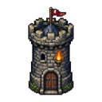
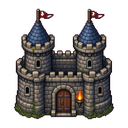
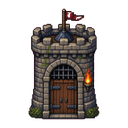
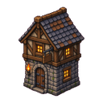
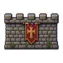
Équipement
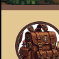
Actuel : sac à dos cuir dans le cercle.
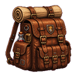
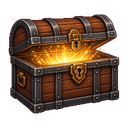
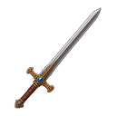
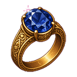
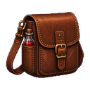
Événement
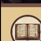
Actuel : livre ouvert.
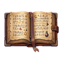
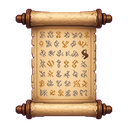
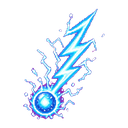
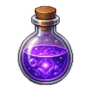
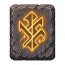
Plan
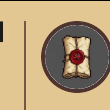
Actuel : parchemin plié au sceau de cire.
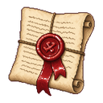
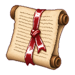
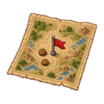
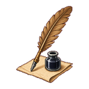
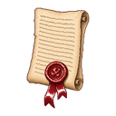
Lieu
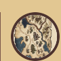
Actuel : mini-carte dans le cercle.
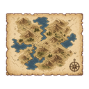
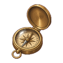
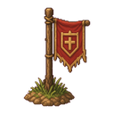
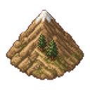
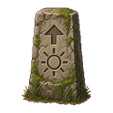
Sur les cartes
Médaillon actuel à gauche, puis trois propositions collées directement sur le parchemin.
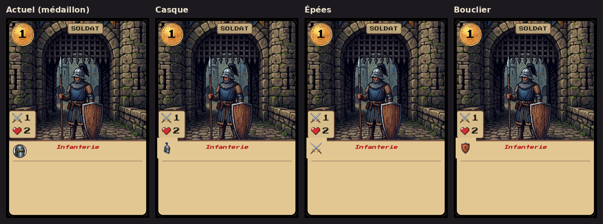
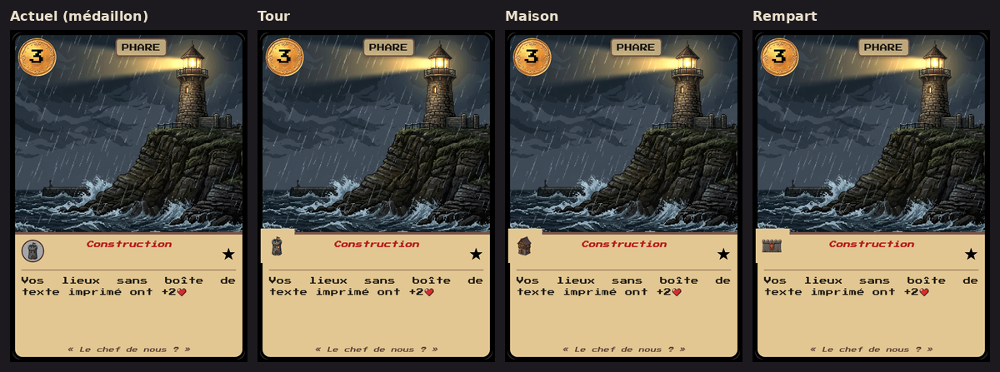
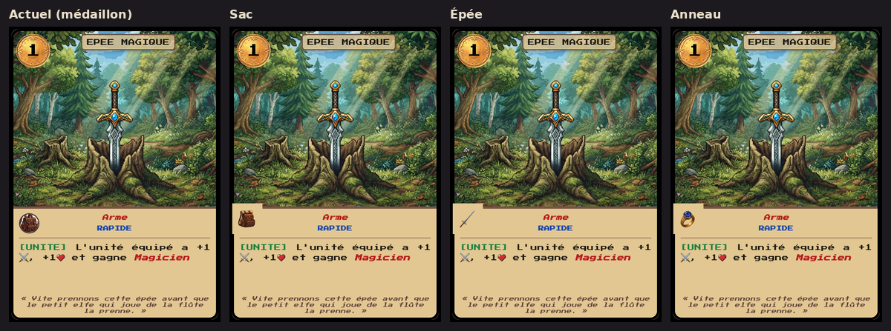
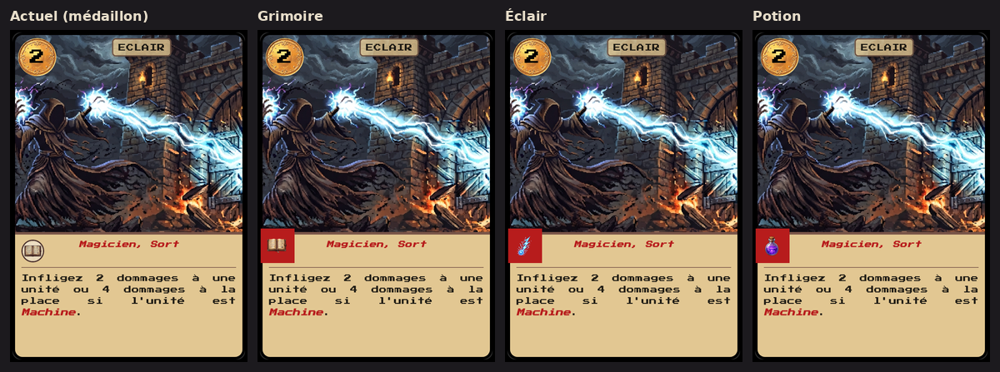
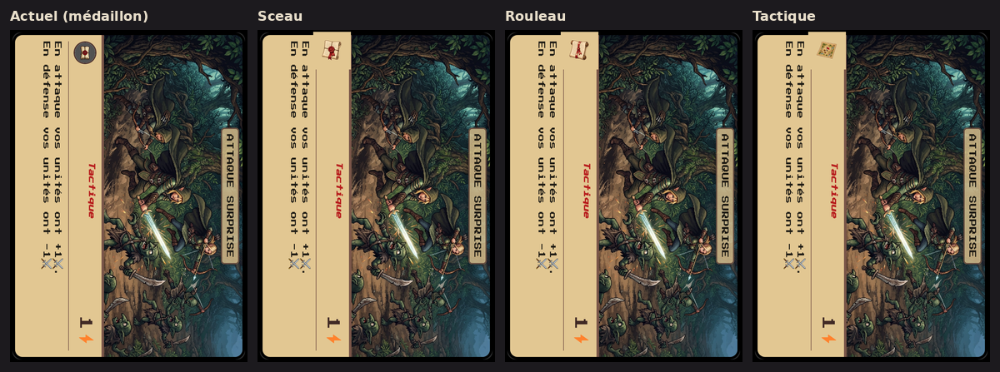
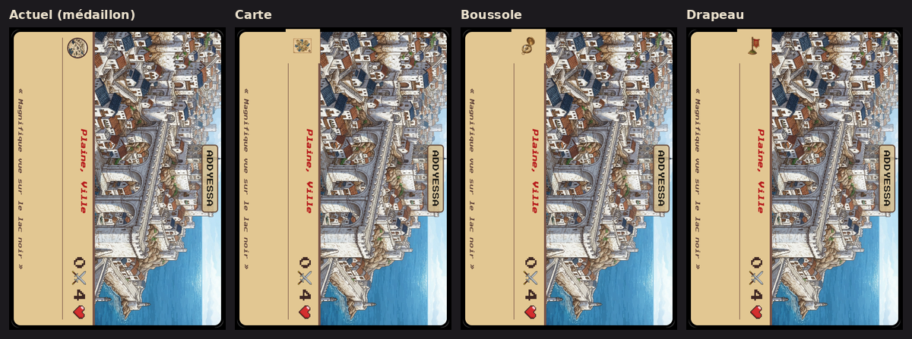